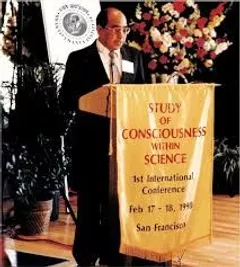
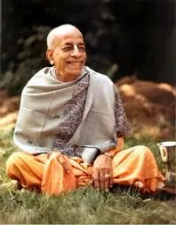

ABOUT US
Founded in 1974, the Bhaktivedanta Institute is a center for Advanced Studies in science and vedanta. As a non-profit organization, it is dedicated to facilitating communication between scientific and religious communities on a wide range of issues that affect people individually and collectively. It explores foundational questions related to life's origin, the nature of humanity, problems related to the body, mind, and society at large, as well as many other philosophical and ethical concerns. The Bhaktivedanta Institute aims to provide comprehensive solutions to these issues through a consciousness-based paradigm. This is a new approach that will have profound significance for broadening our understanding of science, spirituality, and their synthesis. One of the primary objectives of the Bhaktivedanta Institute is to present this paradigm for the critical attention of serious scholars and thinkers throughout the world. As such, the institute supports a closer examination of existing scientific paradigms in cosmology, evolution, physics, biology, genetics, neurosciences, environmental science and other sciences. The Bhaktivedanta Institute also promotes scientific, and philosophical dialogues among scientists, scholars and theologians of the world. These dialogues cover various common conceptual grounds and promote a better understanding amongst different scientific and faith-based communities. They also address issues that emerge due to technological developments and scientific discoveries. The Bhaktivedanta Institute has also collaborated with other organizations such as the URI (United Religious Initiative), Templeton Foundation, Metanexus Institute and many other organizations around the world to address issues of common interests. To fulfill its objectives, the Institute supports the exchange of ideas through conferences, seminars, publications, and its website. We invite you to browse our website, subscribe to our email updates, and attend our events.
FOUNDER DIRECTOR
Dr. Thoudam Damodara Singh (1937-2006), also known as His Holiness Bhaktisvarūpa Dāmodara Swami is the founding director of the Bhaktivedanta Institute. He was one of the world’s pioneer exponents of science-spirituality dialogue and inter-faith peace initiatives. He identified the cause of many of the problems in the world today such as terrorism, environmental issues, and social and religious conflict to be due to a lack of understanding between the fields of empirical science and religion. As the International Director of the Bhaktivedanta Institute, he wrote more than thirty books, gave hundreds of talks and seminars, and organized numerous scholarly discussions and international conferences on topics related to the science and spirituality nexus.
His tireless efforts were revolutionary and brought together some of the best minds in the world - Nobel Laureates, scientists, spiritualists, and world leaders - to a common platform of constructive dialogue and action for a more peaceful world. While traveling extensively around the world, he built bridges between communities, cultures and ideologies. Everywhere he went, he sought to cultivate the human spirit of inquiry, love and peace. Primarily, he emphasized the need for a new paradigm of life beyond the mechanistic model of atoms and molecules, to include that of consciousness, meaning and purpose.
Dr. T. D. Singh was born in the ancient state of Manipur, which is situated in the hilly Northeast region of India. After receiving a scholarship from the Indian government for his excellent academic results, he obtained his PhD in Physical Organic Chemistry, from the University of California, Irvine, USA in 1974. He contributed many papers in the Journal of the American Chemical Society and the Journal of Organic Chemistry in the field of fast proton transfer kinetics in model biological systems using stopped-flow technique and NMR spectroscopy. He also worked on gas phase reaction mechanisms using Ion Cyclotron Resonance (ICR) spectroscopy.
While in the USA, in 1970, he met his spiritual teacher, His Divine Grace A.C. Bhaktivedanta Swami Prabhupāda who belonged to the ancient Vaiṣṇava Vedanta lineage. Under his guidance, Dr. T.D. Singh began advanced studies in the philosophy of Vedanta. In 1974, Śrīla Prabhupāda founded the Bhaktivedanta Institute and appointed Dr. T. D. Singh as Director.
Dr. Singh is renowned for his ability to synthesize two apparently different paradigms of epistemology in Western science and Eastern spirituality. For example, he coined and defined the term ‘spiriton’ in reference to the conscious energy which exists in all living beings, and which has not been described by material sciences.
In addition to his contribution to science and spirituality, Dr. Singh was a key member of the United Religions Initiative (URI) founded by Bishop E. Swing under the auspices of the United Nations. Through the URI, Dr. Singh played a very active role in getting religious leaders from several parts of the globe to meet and work towards greater understanding of each other. Referring to this work, he jokingly used to say “I am performing the chemistry of culture.” Despite his stature as a world figure, Dr. Singh was personal and humble in his dealings with whomever he met. Dr. Singh’s life, works and teachings mark a new chapter in humanity’s quest for the Ultimate Reality by combining a scientific and spiritual approach.
FOUNDER ACHARYA
His Divine Grace A.C. Bhaktivedanta Swami Srila Prabhupāda (1896 –1977), Founder-Ācārya of the Bhaktivedanta Institute was one of the most prominent spiritual and cultural ambassadors of the 20th century. He belongs to the monotheistic Gaudiya Vaishnava Vedanta tradition of India which upholds the three stages of realization of the Absolute Truth namely, Impersonal Brahman, Super Soul and finally Supreme Personality of Godhead as revealed in Śrīmad-Bhāgavatam, the natural commentary on the vedantasutra, and various other spiritual traditions of the World. He had a profound notion of the many facets of science and religion. He strongly felt that scientific knowledge would remain incomplete if we ignore consciousness based paradigms offered by religions of the world in their search for the deeper meaning of our existence. He felt that a synthesis of science and spirituality would only be possible through the joint efforts and open discussions by the deep thinkers of the world. He promoted the concept that "Life comes from Life" indicating a non-material origin of life, and was hopeful that that scientists across the world would be open to scientific exploration of this alternative paradigm.
Śrīla Prabhupāda was born in Kolkata and educated at the prestigious Scottish Church College which produced some of India's most famous leaders and spiritual reformers. Before adopting the life of a pious renunciant or sannyasa in 1959, he was married with children and owned a pharmaceutical business. After taking his vow of renunciation, he began writing English commentaries on Vaiṣṇava scriptures. In the early 1960s, he single-handedly published the first three volumes of the first book of Śrīmad-Bhāgavatam, filling four hundred pages each with a detailed commentary. In 1965 he left India for the United States, obtaining free passage on a freight ship, with the aim of fulfilling his spiritual master's instruction to spread the message of Śrī Caitanya around the world in English. He only carried with him a suitcase, an umbrella, a supply of dry cereal, about eight dollars worth of Indian currency, and several boxes of his books. In ten years, he opened over a hundred centers around the world teaching Vaiṣṇava Vedanta, and had about five thousand students. As a traveling Vaiṣṇava monk, he became the world's most influential communicator of Vaiṣṇava theology to the West. Subsequently Śrīla Prabhupāda authored over 70 volumes on the Vaiṣṇava tradition, which are highly respected by scholars for their authority, depth, fidelity to the tradition, and clarity. Several of his works are used as textbooks in numerous college courses and reference materials for religionists and scholars. His writings have been translated into 76 languages.
Śrīla Prabhupāda was very concerned about how science and technology was directing humanity in the modern world towards a purely materialistic worldview. In his commentary to the Bhagavad-gita (9.2), he wrote "Generally, people are not interested in this confidential knowledge; they are educated in external knowledge. As far as ordinary education is concerned, people are involved with so many departments: politics, sociology, physics, chemistry, mathematics, astronomy, engineering, etc. There are so many departments of knowledge all over the world and many huge universities, but there is, unfortunately, no university or educational institution where the science of the spirit soul is instructed. Yet the soul is the most important part of this body; without the presence of the soul, the body has no value". When he addressed the students of the Massachusetts Institute of Technology (M.I.T.), Boston in 1968, he said, "You are all students of technology. This Krishna consciousness movement is also another technology...Unfortunately, there is no department for distributing knowledge of the science of the soul. But, that is the most important thing." Srila Prabhupāda critiqued the modern reductionist framework which tries to explain life solely in terms of atoms and molecules. Drawing from the conclusions of the teachings of Śrī Caitanya, and the timeless message of the Vedic literatures, Śrīla Prabhupāda taught that the living being or life is beyond molecules, and the fundamental property of life is consciousness and consciousness is nonmaterial. Further the origin of consciousness or life is Śrī Krishna, the Supreme Being or God.